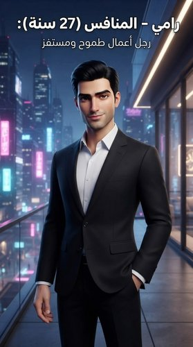
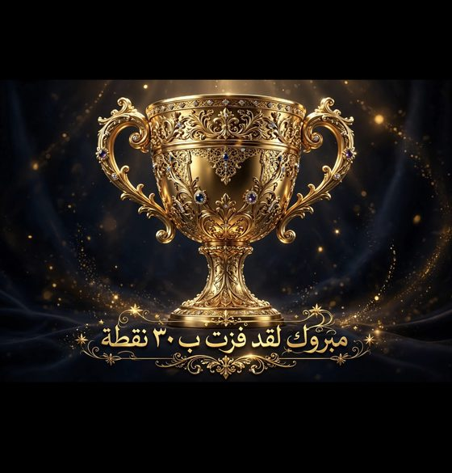

IP CODE — لعبة تحقيق تفاعلية في الملكية الفكرية
الأسئلة تتغير في كل مرة تلعبين فيها
قبل ساعات من افتتاح معرض المستقبل للابتكار، تصل إلى ليان رسالة من مجهول يوقّع باسم X:
«مشروع NOVA الذي ستعرضينه غدًا… سيقدّمه شخص آخر على أنه له. ابحثي عن الأدلة قبل فوات الأوان.»
مهمتك: حلّي 6 مراحل في الملكية الفكرية، وفي نهاية كل مرحلة تحصلين على دليل. بعد الأدلة الستة، اتهمي السارق الحقيقي!
راجعي الأدلة، ثم اضغطي على صورة الشخص الذي سرق فكرة NOVA.

رامي زار المختبر بصفته مستثمرًا محتملًا ووقّع اتفاقية سرية، ثم عاد ليلًا ببطاقة زائر ونسخ الملفات الساعة 02:13، وقدّم طلبًا لتسجيل اسم NOVA، وصاغ طلب براءة منسوخًا من دفتر ليان، واستخدم تصاميم نور في كتيّبه.
✅ نور صاحبة التصاميم الأصلية، وآدم غادر قبل الحادثة، وسامي كان مسافرًا ولا حق له في المشروع.
💡 الدرس: «احمِ فكرتك قبل أن تضطر لإثبات أنها لك».

أنتِ الآن محققة ملكية فكرية… بقي أن تثبتي ذلك في أوراق العمل
📝 ثلاث أوراق عمل متدرجة في الصعوبة: ① أساسية ← ② متقدمة ← ③ تحليلية
أحسنتِ! أنهيتِ المراحل الست وأوراق العمل الثلاث.
إذا أردتِ أن تتعمّقي في عالم الملكية الفكرية، ففي تطبيق GamnaMarks فرعٌ خاص هو «أكاديمية الملكية الفكرية»، يمكّنك من الالتحاق بدورات متدرّجة والحصول على شهادات من جهة مختصة: الجمعية الأمريكية العربية لحماية الملكية الفكرية (AAIPA) – فرع فلسطين.